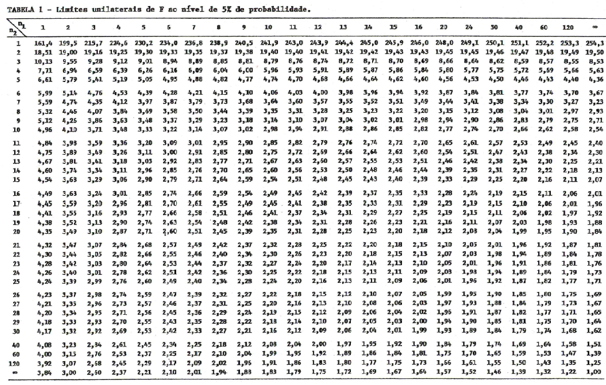
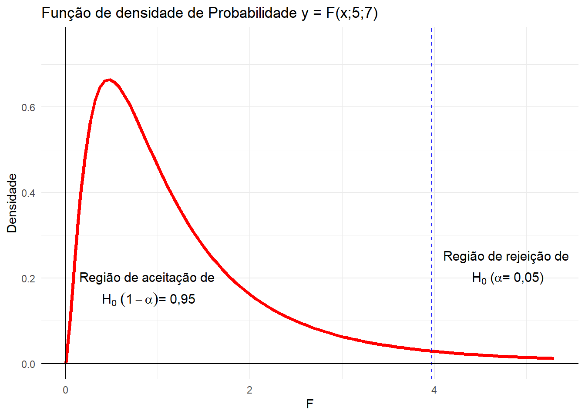
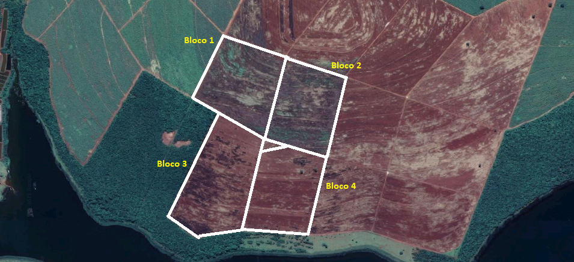
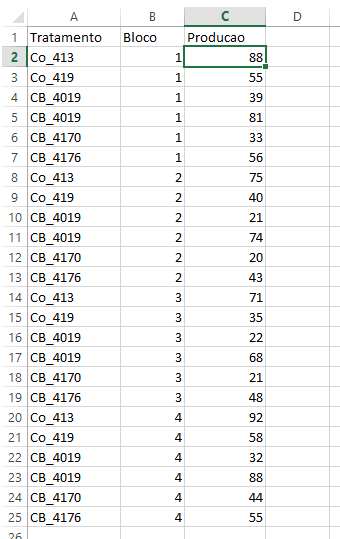
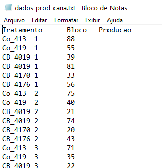

15 Testes de significância
15.1 Introdução
Um dos principais objetivos da estatística é a tomada de decisão a respeito da população, com base nas observações de amostra, ou seja, a obtenção de conclusões válidas para toda a população com base em amostra retiradas dessas populações.
Ao tentarmos tomar decisões, é conveniente a formulação de hipóteses ou suposições relativas às populações. Essas suposições, que podem ou não ser verdadeiras são chamadas de hipóteses estatísticas e consistem, geralmente, em considerações a respeito das distribuições de probabilidade das populações.
Em muitos casos formulamos uma hipótese estatística com o objetivo de rejeitá-la ou invalidá-la. Por exemplo, quando realizamos um experimento com o objetivo de verificar qual é a variedade de cana-de-açúcar mais produtiva, formulamos a hipótese de que não existem diferenças entre as variedades em relação à produção (isto é, que quaisquer diferenças observadas são devidas unicamente aos fatores não controlado ou acaso). Essa hipótese inicial que formulamos, é denominada de **hipótese da nulidade* e é representada por \(H_0\)*.
Admitindo-se esta hipótese como verdadeira, se verificarmos que os resultados obtidos ao final do experimento em uma amostra aleatória diferem acentuadamente dos resultados esperados para essa hipótese, com ase na teoria das probabilidades, podemos concluir que as diferenças observadas são significativas, e rejeitar essa hipótese \(H_0\).
Então, rejeitamos a hipótese da nulidade em favor de uma outra, que é representada por \(H_1\) e denominada de hipótese alternativa. Por exemplo, no caso da comparação entre variedade, a hipótese alternativa seria: As variedades testadas se comportam de maneira diferente em relação à produção de cana-de-açúcar.
Os métodos que nos permitem decidir se aceitamos ou rejeitamos uma determinada hipótese, ou se a amostra observada difere significativamente dos valores esperados, são denominados testes de significância ou testes de hipóteses.
Porém, ao tomarmos decisões de rejeitar ou aceitar uma determinada hipótese, estamos sujeitos a incorrer em dois tipos de erros:
ERRO TIPO I: é o erro que cometemos ao rejeitar uma determinada hipótese verdadeira, que deveria ser aceita.
ERRO TIPO II: é o erro que cometemos ao aceitar uma hipótese falsa, que deveria ser rejeitada.
Esses dois tipos de erros são associados de tal forma que à medida que diminuímos a probabilidade de ocorrência de um deles, automaticamente aumentamos a probabilidade de ocorrência de outro.
Geralmente, em estatística controla apenas o erro Tipo I, por meio do nível de significância do teste.
O nível de significância do teste, representado por \(\alpha\) é a probabilidade máxima com que nos sujeitamos a correr o risco de cometer o erro Tipo I, ao testarmos uma hipótese.
Na prática é usual fixarmos esse nível de significância em 5% ou em 1%, ou seja \(\alpha = 0,05\) ou \(\alpha = 0,01\).
Então, se por exemplo, escolhermos o nível de significância de 5%\((\alpha=0,05)\), isto indica que temos 5 chances em 100 de rejeitarmos uma hipótese que deveria ser aceita, isto é, há uma confiança de 95% de que tenhamos tomado uma decisão correta.
Esta confiança que temos de termos tomada uma decisão correta é denominada de Grau de Confiança do Teste, e é dada por \(100 \cdot (1-\alpha) \%\).
O teste de significância mais utilizado em estatística experimental é o Teste F, que estudaremos a seguir.
15.2 Teste F de Snedecor para análise de variância
A Análise de Variância é uma técnica que nos permite fazer a decomposição da variância total em parte atribuídas a causas conhecidas e independentes e uma porção residual de origem desconhecida e de natureza aleatória.
O teste F tem por finalidade comparar estimativas de variâncias.
Na análise de variância, as estimativas de variância são dadas pelos quadrados médios (Q.M.) e obtemos um Q.M. para cada causa de variação. Assim, em um experimento inteiramente casualizado, temos duas estimativas de variância: uma devido aos efeitos de tratamentos (dadas pelo QM Tratamentos) e outra devida aos efeitos dos fatores não controlados ou acaso (dada pelo QM Resíduo).
Para aplicar o teste F na análise de variância, utilizamos sempre no denominador, o QM Resíduo, ou seja, comparamos sempre uma variância devida aos efeitos do fator controlado (Tratamentos, Blocos, Linhas, Colunas, etc.), com a variância devida aos efeitos dos fatores não controlados ou acaso (Resíduos)
Então:
\[ F= \frac{QM_{Tratamentos} }{ QM_{Resíduos}} \]
Sob a hipótese da nulidade, isto é, supondo-se que os efeitos dos tratamentos são todos equivalentes, teríamos duas estimativas de variância (QM Tratamentos e QM Resíduo) que não deveriam diferir, a não ser por flutuações amostrais, pois ambas estimam a variação do acaso.
Assim,
\(QM_{Resíduo}\) - estima a variação do acaso: \(\sigma^2\).
\(QM_{Tratamentos}\) - estima a variação do acaso mais a variação devida ao efeito de tratamentos: \(\sigma^2 + K \sigma^2_T\)
Portanto,
\[ F=\frac{QM_{Tratamentos}}{QM_{Resíduo} } = \frac{\sigma^2+K\sigma^2_t}{\sigma^2} \]
A seguir, comparamos o valor de F calculado com os valores da tabela de distribuição F (geralmente aos níveis de 5% e 1%). Os valores críticos são obtidos na tabela da distribuição F, em função do número de graus de liberdade de tratamentos (ou blocos), na horizontal (numerador) e do número de graus de liberdade do resíduo, na vertical (denominador).

O critério do teste é o seguinte:
Se \(F\;calculado \ge F\;tabelado\) o teste é significativo ao nível testado. Então, devemos rejeitar a hipótese da nulidade (\(H_0\)), e concluir que os efeitos dos tratamentos diferem entre si a esse nível de probabilidade, e essas diferenças não devem ser atribuídas ao acaso, mas sim aos efeitos dos tratamentos testatos, com um grau de confiância \(100 \cdot(1-\alpha)\%\).
Se \(F\;calculado \le F\;tabelado\) o teste é não significativo ao nível testado. Então, não devemos rejeitar a hipótese da nulidade (\(H_0\)). Neste caso concluímos que os efeitos dos tratamentos não diferem entre si a esse nível de probabilidae. Abaixo segue o esquema da distribuição F.

Resumidamente, temos:
Fcalc < Ftab(5%) - O teste F é não significativo ao nível de \(5\%\) de probabilidade. Aceitamos \(H_0\) - Utiliza-se a notação \(Fcalc^{NS}\).
Ftab(5%) < Fcalc < Ftab(1%) - O teste é significativo ao nível de \(5\%\) de probabilidade. Rejeitamos \(H_0\) com um grau de confiança superior a \(95\%\). Utiliza-se a notação: \(Fcalc^*\).
Fcalc > Ftab(1%) - O teste é significativo ao nível de \(1\%\)de probabilidade. Rejeitamos \(H_0\) com um grau de confiança superior a \(99\%\). Utiliza-se a notação: \(Fcalc^{**}\).
15.3 Exemplo de aplicação do teste F
Num experimento de competição de cultivares de cana-de-açúcar foram utilizados \(6\) Tratamentos e \(4\) repetições. As cultivares testadas foram:
- Co 413
- Co 419
- CB 40/19
- CB 40/69
- CB 41/70
- CB 41/76
O delineamento experimental utilizado foi em blocos casualizados, com os blocos controlando diferenças na fertilidade do solo entre terraços.
Croqui experimental localizada no município de Apareceida do Taboado (MS).
Croqui do experimento mostrando a disposição dos blocos na área experimental.

Aspectos gerais da uma parcela experimental.
Fonte: Arquivo pessoal.
Os dados experimentais, de produção da cultura foram tabulados em planilha eletrônica da seguinte forma.

Observe que os dados estão na forma retanrgular, também denominada “frame” de dados. Nessa forma cada coluna representa um fator ou característica encontrada no experimento e fornece as informações de cada parcela experimental (linhas da tabela). Note que a primeira linha da tabela é destinada para informar o nome de cada coluna (cabeçalho)
Os dados poderiam ser apresentados em arquivos tipo “txt” exemplo dados_prod_cana.txt

Para a produção da cultura da cana-de-açúcar, em t/ha foram estimados os seguintes valores de soma de quadrados para a análise de variância.
\(SQ{Trat} =10471,21\)
\(SQ{Bloco} =1424,792\)
\(SQ{Total} =12097,96\)
As hipóteses que desejamos testar, para Tratamentos são:
\(H_0\): As cultivares de cana-de-açúcar testadas não diferem entre si quanto à produção de cana-de-açúcar.
\(H_1\): As cultivares de cana-de-açúcar testadas possuem efeitos diferentes quanto à produção de cana-de-açúcar.
As hipóteses para Blocos são:
\(H_0\): Os blocos instalados em campo não diferem entre si quanto à produção de cana-de-açúcar.
\(H_1\): Os blocos possuem efeitos diferentes quanto à produção de cana-de-açúcar, isso implica em dizer que os blocos foram eficiente no controle local.
Para testar estas hipóteses, podemos montar o seguinte quadro de análise de variância:
Para testar estas hipóteses, podemos montar o seguinte quadro de análise de variância:
| Causas de Variação | GL | SQ | QM | F |
|---|---|---|---|---|
| Tratamentos | 5 | 10471,21 | 2094,24 | 155,55** |
| Blocos | 3 | 1424,79 | 474,93 | 35,27** |
| Resíduo | 15 | 201,96 | 13,46 | |
| Total | 23 | 12097,96 |
Valores de \(F\) da Tabela:
Para Tratamentos \((5 \times 15\; gl): \begin{cases} 5\%=2,90 \\ 1\% = 4,56\end{cases}\)
Para Blocos \((3 \times 15\; gl): \begin{cases} 5\%=3,29 \\ 1\% = 5,42\end{cases}\)
Conclusão para Tratamento:
O teste foi significativo ao nível de 1% de probabilidade. Rejeitamos a hipótese \(H_{0}\) e concluímos que as cultivares (pelo menos 2) testadas possuem efeitos diferentes quanto à produção de cana-de-açúcar, a esse nível de probabilidade, com um grau de confiança superior a 99% de probabilidade.
Conclusão para Blocos:
O teste foi significativo ao nível de 1% de probabilidade. Rejeitamos a hipótese \(H_{0}\) e concluímos que os terraços utilizados como blocos (pelo menos 2) diferem entre si em relação à produção de cana-de-açúcar, a esse nível de probabilidade, com um grau de confiança superior a 99% de probabilidade.

15.4 Passos para fazer a análise de variância no R
15.4.0.1 Carregar o Pacote {ExpDes.pt}
library(ExpDes.pt)##
## Attaching package: 'ExpDes.pt'## The following object is masked from 'package:MASS':
##
## ginv15.4.0.2 Carregar o banco de dados.
Neste caso, podemos ler diretamente da internete, uma vez que possuimos o endereço do banco de dados.
- definimos o endereço na
url;
- utilizamos a função
read.table()para ler o banco de dados e salvar no objetodados. Obseve que utilizamos o argumentoh=TRUE, indicando que a primeira linha do banco de dados possui o cabeçalho.
# Definindo o caminho
url <- "https://raw.githubusercontent.com/arpanosso/experimentacao-agricola-unesp-fcav/master/data/dados_prod_cana.txt"
# Entrando com os dados
dados <- read.table(url, h= TRUE)
# Checando o 6 primeiros registros do banco de dados
head(dados)## Tratamento Bloco Producao
## 1 Co_413 1 88
## 2 CB_4069 1 55
## 3 CB_4019 1 39
## 4 Co_419 1 81
## 5 CB_4170 1 33
## 6 CB_4176 1 5615.4.0.3 Vamos utilizar o operador de acesso $ para extrair as colunas do objeto dados. Observe que para os fatores Tratamento e Bloco, utilizamos a função as.factor() que define o tipo de dados como categórico, necessário para a aplicação da análise de variância.
trat <- as.factor(dados$Tratamento)
bloco <- as.factor(dados$Bloco)
resp <- dados$Producao15.4.0.4 Utilizar a função do pacote {ExpDes.pt}, respeitando o delineamento experimental, no caso; Delineamento em Blocos ao Acaso (DBC)
dbc(trat, bloco, resp)## ------------------------------------------------------------------------
## Quadro da analise de variancia
## ------------------------------------------------------------------------
## GL SQ QM Fc Pr>Fc
## Tratamento 5 10471.2 2094.24 155.545 0.0000e+00
## Bloco 3 1424.8 474.93 35.274 4.8993e-07
## Residuo 15 202.0 13.46
## Total 23 12098.0
## ------------------------------------------------------------------------
## CV = 6.99 %
##
## ------------------------------------------------------------------------
## Teste de normalidade dos residuos
## valor-p: 0.9217893
## De acordo com o teste de Shapiro-Wilk a 5% de significancia, os residuos podem ser considerados normais.
## ------------------------------------------------------------------------
##
## ------------------------------------------------------------------------
## Teste de homogeneidade de variancia
## valor-p: 0.7977011
## De acordo com o teste de oneillmathews a 5% de significancia, as variancias podem ser consideradas homogeneas.
## ------------------------------------------------------------------------
##
## Teste de Tukey
## ------------------------------------------------------------------------
## Grupos Tratamentos Medias
## a Co_413 81.5
## a Co_419 77.75
## b CB_4176 50.5
## b CB_4069 47
## c CB_4170 29.5
## c CB_4019 28.5
## ------------------------------------------------------------------------